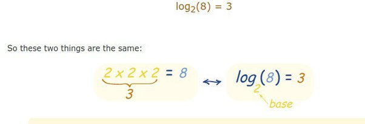

ما هي الخوارزميات؟ وما أهميتها؟
مقدمة
هناك الكثير يظن أن اللوغاريتم والخوارزمية هما نفس الشيء. لكن في الحقيقة لا يوجد أي علاقة بين اللوغاريتمات
(Logarithms) وبين الخوارزميات (Algorithms). يوجد تشابه لفظي بينهما فقط لا غير.
اللوغاريتم Logarithm: هي نوع من أنواع الدوال الرياضية. وهي معكوس الدالة الأسية.
الخوارزمية Algorithm: هي خطوات مرتبة دقيقة وواضحة لأداء مهمة معينة.
واللغوغاريتم هو رقم. نقول لوغاريتم الرقم 8 للأساس 2 هو الرقم 3 يكافئ بالمعكوس الرقم 2 مرفوع للأس 3 هو الرقم 8. 
الخوارزمية Algorithm: هي خطوات مرتبة دقيقة وواضحة وغير مبهمة لأداء مهمة معينة. بلغة الحاسوب: هي مجموعة من
الأوامر المنطقية التي يتبعها الحاسوب لحل مشكلة معينة. الخوارزميات هي قلب الحاسب الآلي النابظ. الخوارزمية دائما
تكون معرفة بشكل واضح ولا لبس فيها وتستخدم في أداء العمليات الحسابية البسيطة والمعقدة أو في معالجة البيانات أو في
اتخاذ القرارات وأتمته المهام.
أبسط مثال على ذلك عندما تقوم بالبحث عن صديق لك في الفيس بوك أو أي شبكة اجتماعية أخرى فأنك تقوم باستخدام إحدى
خوارزميات البحث. وبحكم أن هناك أكثر من 2 مليار مستخدم لكنك تجد صديقك من بين هؤلاء الناس بسرعة فائقة. لذلك نحتاج
الى خوارزميات أكثر كفاءة وأداء وهنا تكمن أهمية الخوارزميات.
مثال بسيط: تخيل معك قائمة مرتبة بالارقام من الرقم 0 إلى الرقم 100. وأردت الوصول الى الرقم 51 خطوة خطوة.
وبالنسبة للحاسوب هناك خياران:هي البدأ من الصفر والمقارنة مع كل رقم تصاعدياً إذا كان يساوي 51 ونحتاج هنا الى 51
خطوة. أو البدء من الرقم 100 والمقارنة مع كل رقم اذا كان يساوي 51 ونحتاج هنا الى 49 خطوة. في كلتا الحالتين وقت
المعالجة كبير جداً خاصة اذا كنا نتعامل مع قوائم مصفوفات ذات حجم كبير.
لكن إذا استخدمنا خوارزمية البحث الثنائية فقط نحتاج الى 7 خطوات لكي نصل إلى الرقم 51. من خلال التقسيم الثنائي
للقائمة والمقارنة مع الرقم الأوسط.